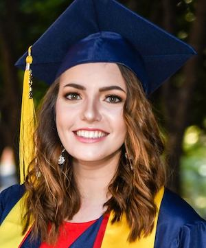

Bio
 I'm a first year graduate student studying data science at the University of California, Riverside. Previously, I got my Bachelors of Science in Astronomy from the University of Arizona in 2018. I first became interested in space at the age of 4, and started working at Vanderbilt Dyer Observatory in my hometown of Nashville, TN when I was 13. I began operating telescopes and giving nightly tours and astronomy talks. My extensive operations experience continued to develop throughout high school, and on my first day of college, I was chosen as a student telescope operator for Steward Observatory. After a year, I was promoted to Chief Telescope Operator, where I oversaw nightly operations of the 21” and 16” Cassegrain telescopes on campus, and managed a team of other student operators. In this role, I gained valuable telescope operations experience, and became a more confident public speaker by giving astronomical talks at public observing nights. I am also advocate for supporting mental health, especially in STEM fields. In October of 2016, I was hit and almost killed by a drunk driver while on my college campus. This led to a very physically and mentally traumatic, depressive and reclusive time in my life. Today, I still work on moving forward with lasting issues from this incident, and encourage everyone to put their mental health first, and have stayed determined to not let the actions of one person overshadow my career. I previously worked at Apple in Franklin, TN from 2018-2021 doing software/hardware repairs, as well as working in special programs for both the Data Analytics server engineering team, and AppleCare Support's Fraud Engineering team as a Data Science Engineer. I now currently work for NASA Goddard Space Flight Center, working on on migrating NASA data workflows and data models to AWS and prototyping/testing serverless computing capabilities with Lambda. I also do research as part of my program at UCR. With many new observatories like the Large Synoptic Survey Telescope coming online in the next few decades, I am interested in the different statistical analysis approaches for the massive amounts of data these surveys will acquire each night. One of my biggest research interests is utilizing machine learning to aid in the classification process for astronomical data.